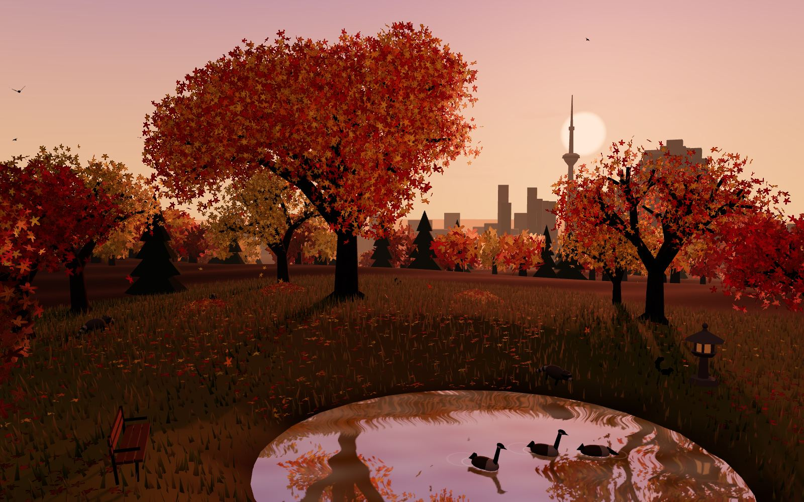
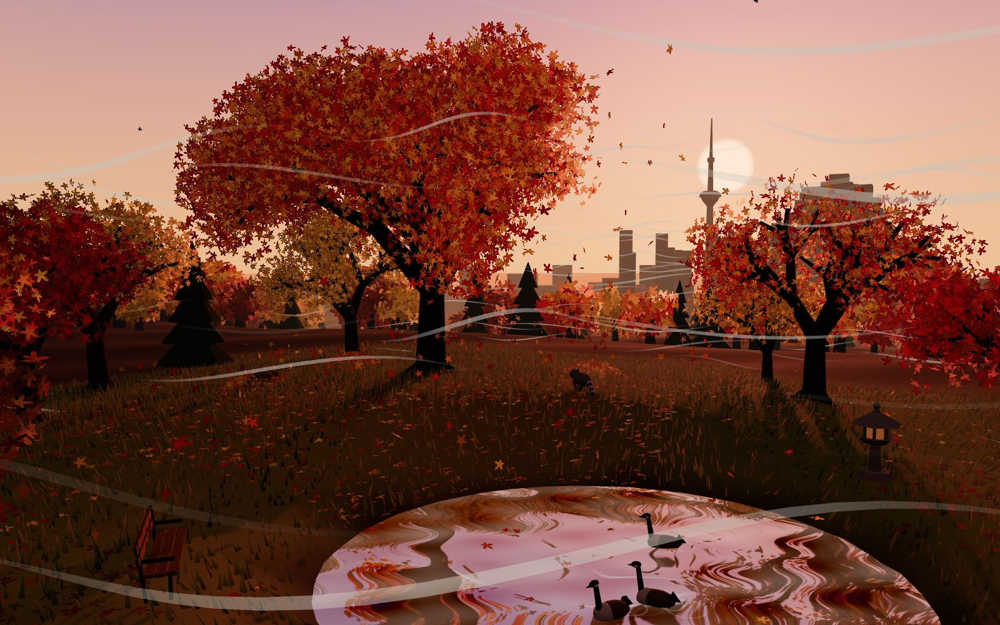
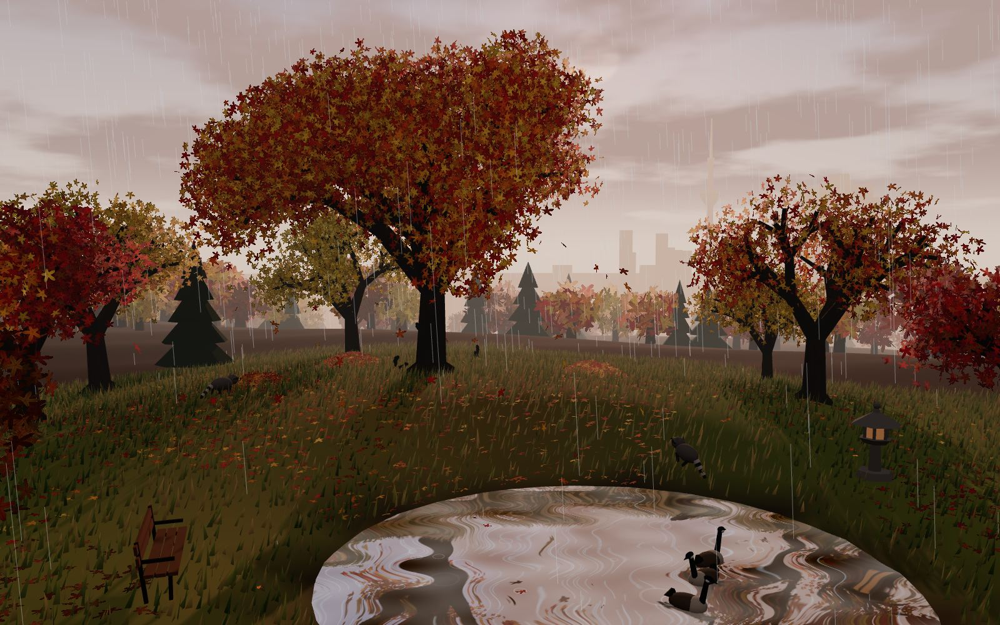
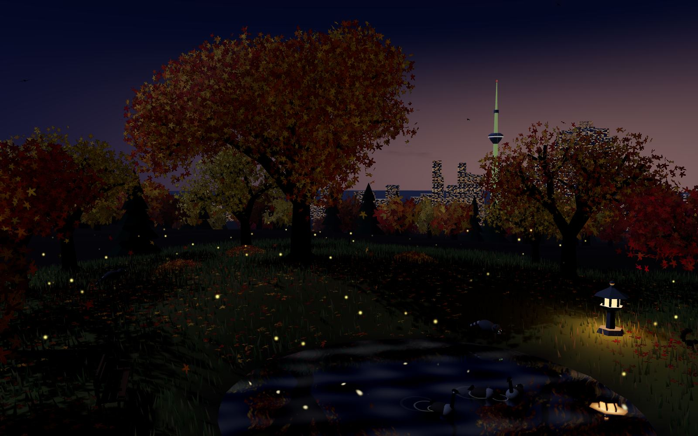

● Live 3D · drag to look around · click a tree to shake it
Riverdale Park East · Toronto · October
Toronto, the week the maples turn.
Maple Hill is a 3D autumn park on the slope above the Don Valley, looking west to the CN Tower. Set the wind, move the sun, shake a tree and watch a city's worth of leaves come down.
The scene
Four moods of the same hill
One sugar maple, a grove of oaks, birches and spruces, a pond with Canada geese, and downtown on the horizon. Every frame below is the live scene with a different preset.



What you can change
A whole autumn on one panel
Speed, gusts and a compass dial
Drag the dial to set where the wind comes from. Push it to 90 km/h, or send a gust front that sweeps the whole park.
Species, season and how fast they fall
Turn the big tree from sugar to red or Norway maple, slide from early September to late October, then rake the lawn.
Time of day or the sun's exact angle
Follow the clock from dawn to the city lights at night, or place the sun by height and compass direction.
Rain, cloud and valley mist
A downpour roughens the pond, dims the sun and hides the towers behind a grey wall.
Raccoons, black squirrels, geese
Click the grass to scatter acorns or the pond to toss bread, and they come over to eat.
Wind, leaves, rain, birds, crickets
Every sound is generated in your browser and follows the wind speed and the hour.
Colour calendar
How Toronto's ravines change colour
The city turns from the north and the ravine floors first. Peak colour downtown usually lands in the second half of October, then the oaks hold on into November. Dates shift a week either way with the weather.
- Late September
First colour in the ravines
Red and silver maples on the valley floors redden first, along with sumac on the slopes.
- Early to mid October
Sugar maples go orange
Street trees and park maples move through orange to scarlet. Thanksgiving weekend is often the first strong week.
- Mid to late October
Peak across the city
The Don Valley, High Park and the Rouge are at their fullest. Norway maples are still gold.
- Early November
Oaks and spruces carry it
Most maples are bare. Red oaks hold russet leaves, and the evergreens stand out against them.
Plan your golden hour
Times are for downtown Toronto, in local time.
Pick a day to see the times.
Where to go
Seven places to see it in person
Maple Hill is modelled on the first one. The rest are spread across the city, from the lake to the eastern edge.
Riverdale Park East Broadview Ave
The hill that looks west over the Don Valley to the skyline. Best near sunset, when the towers go gold.
High Park Bloor St W
Rare black oak savanna, Grenadier Pond and long loops under maples and oaks.
Evergreen Brick Works Bayview Ave
Ravine trails and a quarry pond in the Don Valley, with a lookout over the treetops.
Edwards Gardens Lawrence Ave E
Formal gardens that lead down into the wooded Wilket Creek ravine.
Scarborough Bluffs Kingston Rd
Pale cliffs above Lake Ontario with autumn woods along the top.
Toronto Island Park Ferry from Jack Layton Terminal
Quiet tree-lined paths and the classic view back across the harbour to downtown.
Rouge National Urban Park Eastern edge of the city
Canada's first national urban park, with forest, marsh and river valley trails.
Residents
Who you'll meet under the trees
Raccoons
Toronto's unofficial mascot. The city even redesigned its green bins in 2016 to keep them out.
In the scene they dig through leaf piles and come for acorns.
Black squirrels
A dark colour form of the eastern grey squirrel, so common in Toronto that many visitors notice them first.
In the scene they hop across the lawn and climb the big maple.
Canada geese
Year-round on the city's ponds and waterfront, and loud about it.
In the scene they paddle the pond, dip for food and leave ripples.
Trees in the scene
Five palettes of a Toronto October
Sugar maple
Acer saccharum
Red maple
Acer rubrum
Norway maple
Acer platanoides
Red oak
Quercus rubra
Birch
Betula
The hill is open
Go stand under the big maple.
Step into Maple HillRuns in any recent desktop or phone browser with WebGL. Turn sound on in the Sound tab.